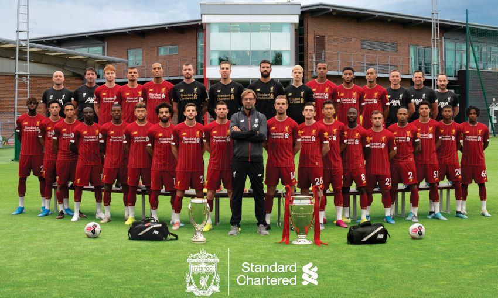

Welcome to Liverpool F.C.
Liverpool Football Club is a professional football club in Liverpool, England, that competes in the Premier League, the top tier of English football. Domestically, the club has won nineteen League titles, seven FA Cups, a record eight League Cups and fifteen FA Community Shields. In international competitions, the club has won six European Cups, more than any other English club, three UEFA Cups, four UEFA Super Cups (also English records) and one FIFA Club World Cup.
Founded in 1892, the club joined the Football League the following year and has played at Anfield since its formation. Liverpool established itself as a major force in English and European football in the 1970s and 1980s, when Bill Shankly, Bob Paisley, Joe Fagan and Kenny Dalglish led the club to a combined eleven League titles and four European Cups. Liverpool won two further European Cups in 2005 and 2019 under the management of Rafael Benítez and Jürgen Klopp, respectively, the latter of whom led Liverpool to a nineteenth League title in 2020, the club's first during the Premier League era.
One of the most widely supported teams in the world, in 2019, Liverpool was the world's seventh-highest-earning football club, with an annual revenue of €604 million, and the world's eighth-most-valuable football club, valued at $2.183 billion. Liverpool has long-standing rivalries with Manchester United and Everton. The team changed from red shirts and white shorts to an all-red home strip in 1964 which has been used ever since. The club's anthem is "You'll Never Walk Alone".
The club's supporters have been involved in two major tragedies: the Heysel Stadium disaster, where escaping fans were pressed against a collapsing wall at the 1985 European Cup Final in Brussels, with 39 people – mostly Italians and Juventus fans – dying, after which English clubs were given a five-year ban from European competition; and the Hillsborough disaster in 1989, where 96 Liverpool supporters died in a crush against perimeter fencing, which led to the elimination of fenced standing terraces in favour of all-seater stadiums in the top two tiers of English football.